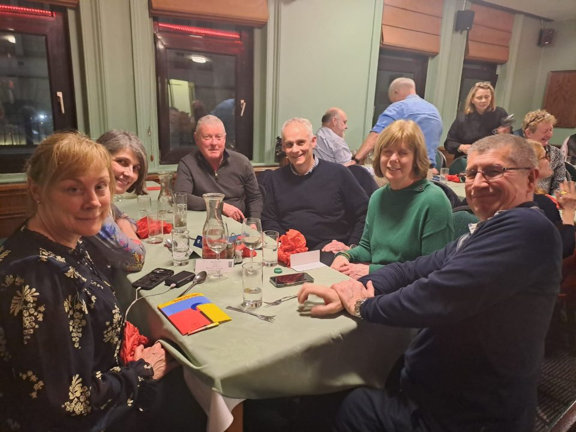
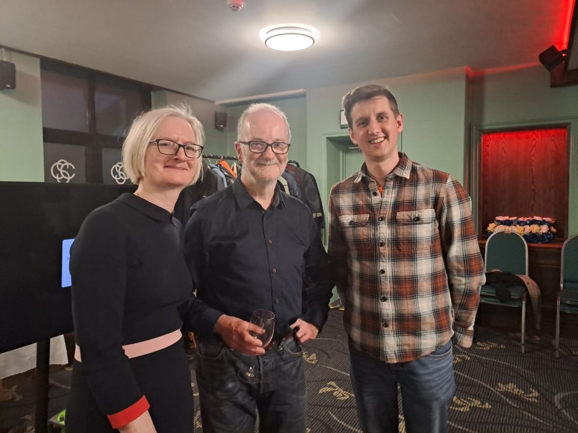
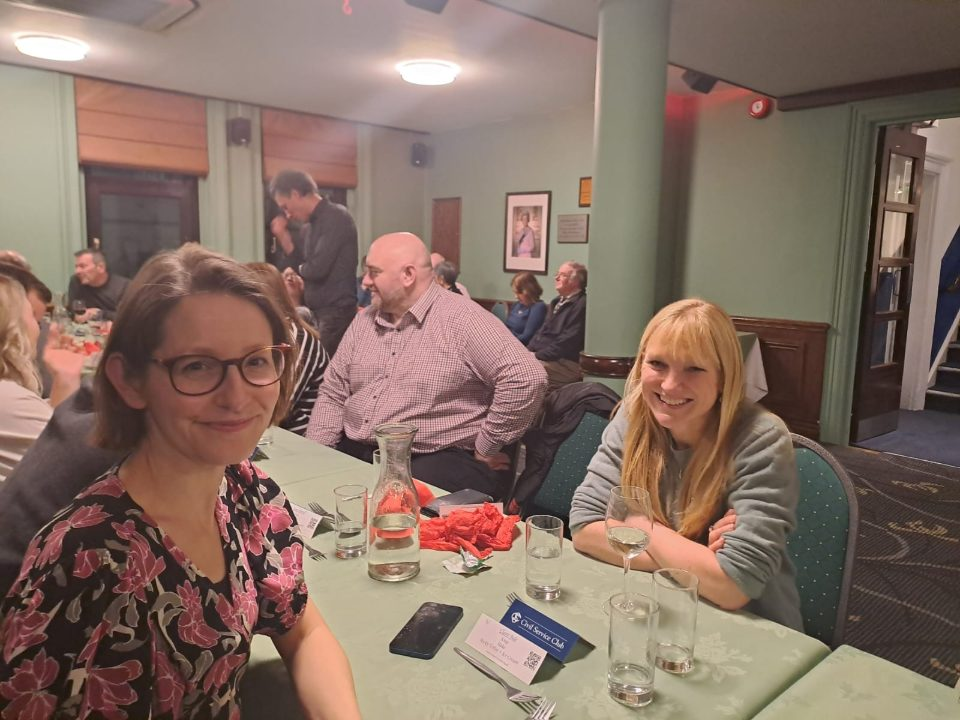
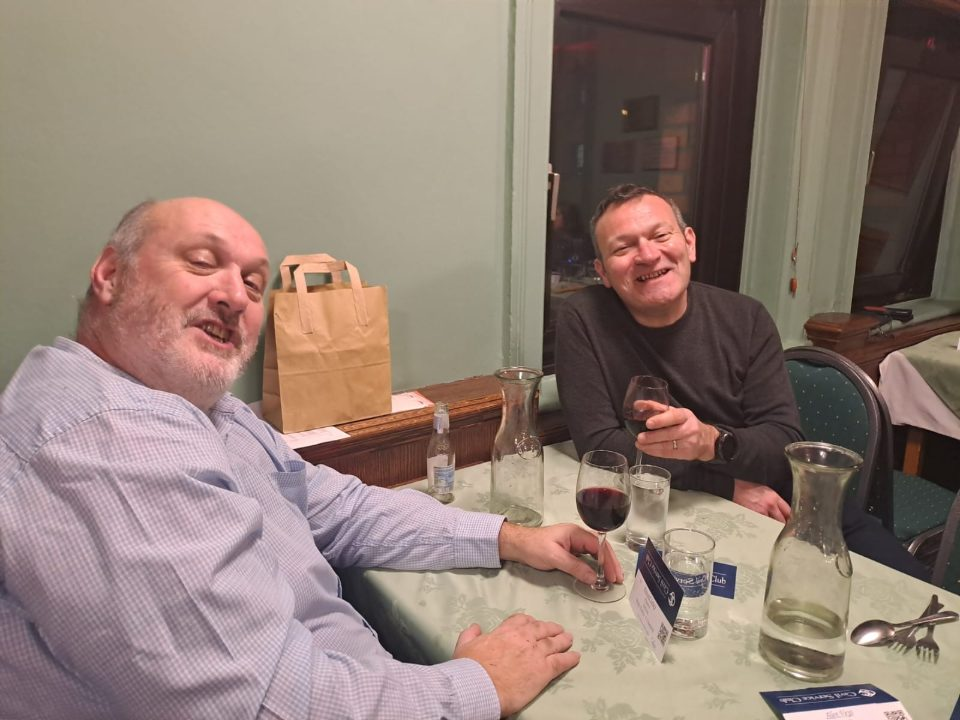
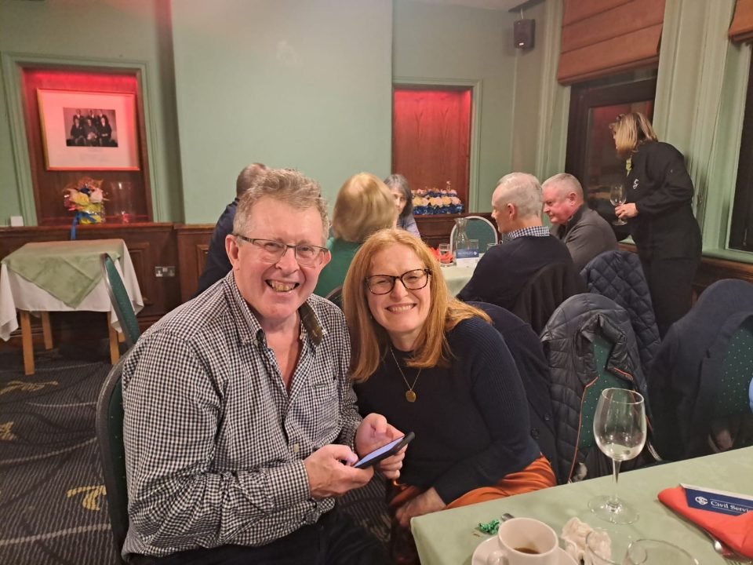
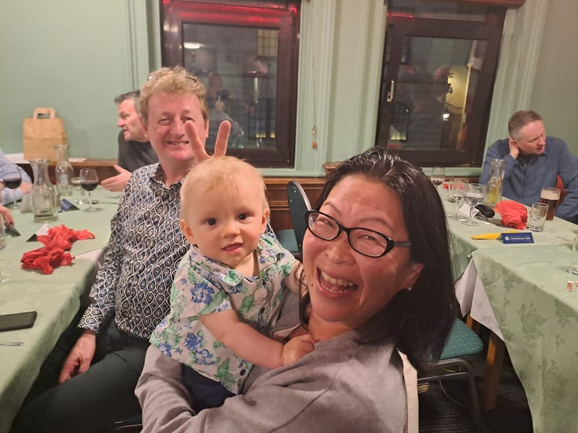
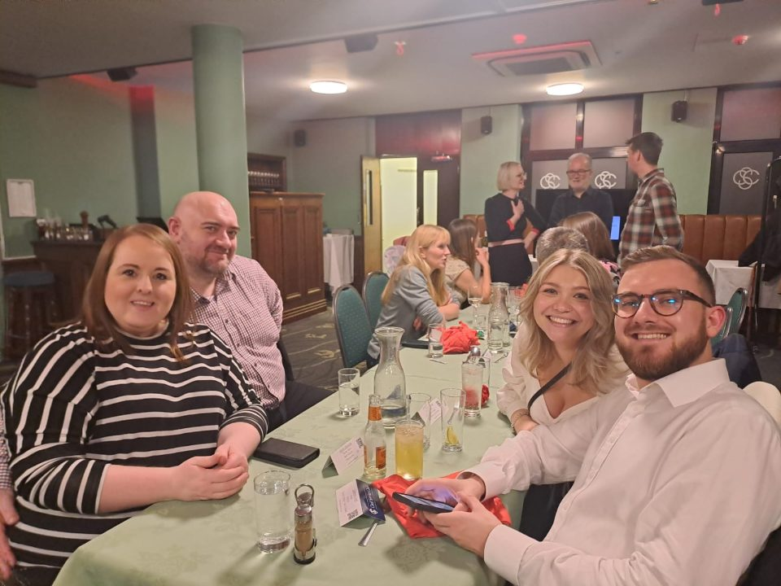
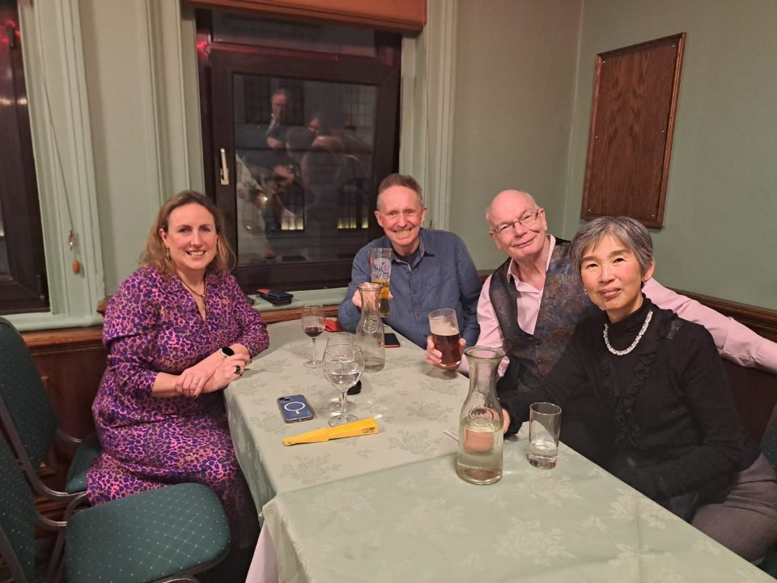
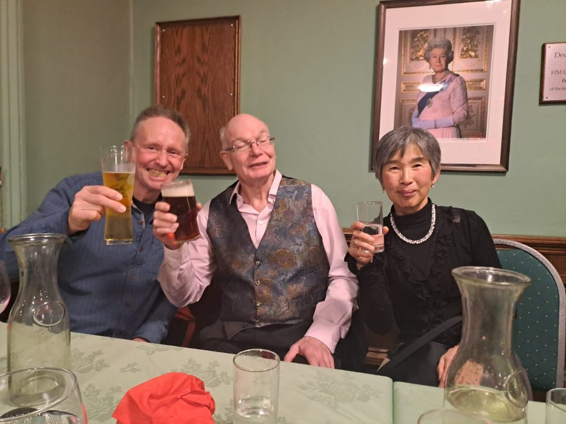
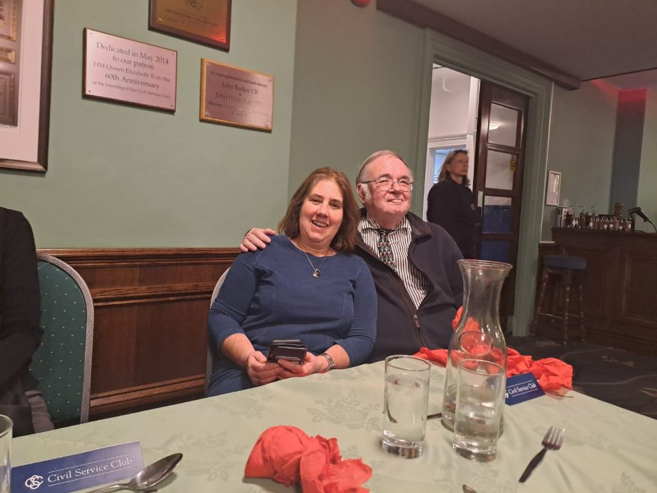

50th Anniversary Celebration Dinner
The Argonauts had its 50th anniversary on Tuesday 16th January 2024. Saturday 3rd February brought past members and current members together to celebrate the anniversary at Civil Service Club.
While past members had a catch-up with each other, present members heard stories in the old days from past members over drinks and dinner.
Here is the speech presented by the current chairperson, Alex, followed by a toast.
Good evening. For those of you who do not know me, I am Alex and happen to be the chairman of the Argonauts Dive Club.
Ladies and gentlemen, esteemed members of the Argonauts Dive Club, honoured guests, and friends, welcome and thank you for coming. I feel extremely humble being your chairman in a room full of such experience.
I would like to make my first toast and say a huge thank you to Sarah and Cameron who against all the odds have managed to heard all the cats and bring us together tonight. Sarah and Cameron. 2024 is a memorable year for the Argonauts as we gather to celebrate its 50th anniversary and look back over the years since 1974. Over the past five decades, the club has managed to withstand the test of time bringing together not only club members, but divers from other clubs leading to deep friendships developed through a shared hobby of adventure, exploration and, of course, socialising. Are there any guests who joined the club in 1974, the seventies, the eighties?
It's remarkable to think about the vision and courage of the pioneers who founded this club in 1974. BSAC was then only 20 years old, wet suits were handmade (does anyone have a handmade wetsuit?) and divers would still have to wait another14 years before the launch of the infamous BSAC 88 Deco tables. Now we have super powerful dive computers and affordable dry suits. I think we now have it easy.
Argonauts has a rich culture of being able to bring together people from all wards of life, all ages and all experiences. It has helped train and integrate the inexperienced and the new to whatever level they wish to reach and indeed to advanced divers and instructors. And all this is done with the help of BSAC and the volunteer instructors and officers. So, please, a toast to all those who have helped the club be they instructors, social secs, finance officers etc….
However, every member, current or past, has added their unique tale and character to the club's rich tapestry and are remembered in the club’s folk lore, some of which may have become slightly exaggerated and which I am sure you will have discussed. I’m not sure what the statistics would show, but I suspect that more than half of the club’s dives over the years have been in UK waters from Swanage across to the Scillies up to Northern Island and Scapa and back down to St Abbs and the Farne Islands. We have also had the opportunity to travel the world from Malta to Bali, to the Maldives, and Lanzarote as well as the Red Sea to name but a few (and Truck lagoon) and in so doing seeing amazing flora, fauna, wrecks and reefs. And, of course, on dry, great places to eat and drink. As we look to the future, the recreational diving community has changed. Safety and equipment has certainly improved. Indeed, cheap flights and organisations such as PADI have opened “recreational” diving to “casual” diving where you can just dive in blue water. Previously, if you wanted to dive you pretty much had to learn with BSAC in the UK enjoying, at some time, the cool, clear, sub zero waters of Stoney Cove. Now, pop on a plane, sign up to course and drop in the warm water. This is a real existential threat to BSAC clubs like ours whose membership numbers are challenged and diving in UK waters is not quite as attractive. I don’t know how to fix this but what I do know is that diving in blue water is so much more special, safe and enjoyable having dived around the UK. I truly hope Argonauts will continue to attract and bring on new divers and thrive over the next 50 years. In closing, I have two toasts to make. First, a toast to those who cannot be with us and especially to those who have passed away to the great sea in the sky.
And finally, I would like to raise a glass. to all past and present members and friends of the Argonauts Dive Club. May the currents of curiosity, the depths of friendship, and the excitement of exploration continue to guide us as we dive into the next half-century of underwater adventures. Thank you, and happy 50th anniversary to the Argonauts Dive Club!
Some snapshots at the dinner










Back to Archives
Created in February 2024